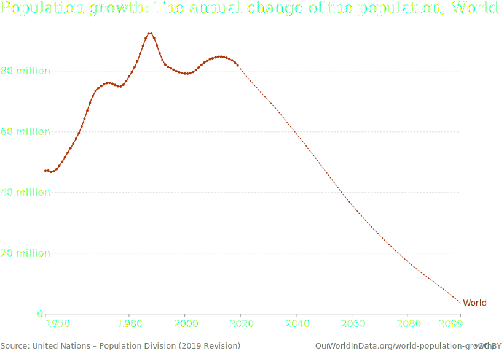

Биология
Введение
Научные достижения и прогресс
В ХХ веке возникли опасные вызовы для человечества: численность населения стала рости. В сильном росте численности населения виновата наука. Она дала нам: прививки, гигиену, асептику и антисептику, антибиотики, большой прогресс в хирургии.

Средняя ожидаемая продолжительность жизни катастрофически выросла.
Биология - наука 21 века: большое число сотрудников, работающих за зарплату, денег, выделенных на научные исследования.
Гранты правительства РФ 40 штук | 6 млрд ₽
- Биология и медицина 13
- Физика, астрофизика, атомная энергетика 6
- Химия, науки о материалах 3
Причины, по которым на биологию дают средства
- Медицина
- Производство пищи
- Экология
Генная инженерия
Генная инженерия - результат развития молекулярной биологии.
Темпы развития генной инженерии
- 1944 - стало известно о том, что ДНК содержит генетическую информацию
- 1953 - открытие структуры ДНК
- 1961 - генетический код был расшифрован
Началась эра молекулярной биологии: ученые научились "читать" тексты из аминокислот и нуклеотидов и изменять их.
Конец записи.Вернуться на главную